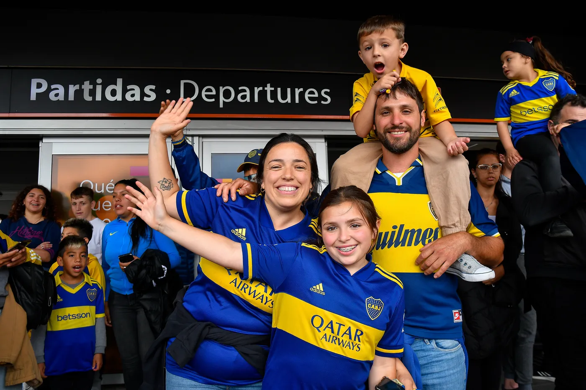

Bienvenido hincha del único Grande
La pasión y la historia que nos une
Bienvenido, hincha del único Grande. En este espacio, te invitamos a formar parte de nuestra gran familia. Boca Juniors no es solo un club de fútbol, es una pasión que se vive, se siente y se lleva en el corazón. Desde su fundación, nuestra historia está llena de logros, sacrificio y momentos inolvidables que nos han unido como una gran comunidad. Aquí, en cada rincón, palpita el alma xeneize, y te necesitamos para seguir escribiendo nuevas páginas de gloria. Únete a nosotros y sé parte de una tradición que trasciende generaciones. Con tu apoyo, podemos seguir haciendo historia juntos. ¡Vení a formar parte de esta pasión que no conoce límites! El Club Boca Juniors te espera con los brazos abiertos.
Historia de Boca Juniors
Boca Juniors fue fundado el 3 de abril de 1905 en el barrio de La Boca, Buenos Aires. Desde entonces, ha sido uno de los clubes más exitosos del fútbol argentino y mundial.
- 34 títulos de liga en Argentina
- 6 Copas Libertadores
- 3 Copas Intercontinentales
- Más de 250 mil socios en todo el mundo
¿Quiénes somos?
Somos una comunidad dedicada a todos los hinchas de Boca Juniors, un espacio creado para mantenerte informado sobre las últimas novedades del club y fortalecer el vínculo con la pasión xeneize. Nuestra misión es compartir la historia, el presente y el futuro del equipo más grande de Argentina, acercando a los socios y fanáticos de todas partes del mundo.
Nuestra pasión
Boca Juniors no es solo un club de fútbol, es una pasión que une a millones de personas. La Bombonera, nuestros colores y nuestra hinchada son el corazón de una historia repleta de triunfos, sacrificios y gloria.
¿Qué encontrarás en nuestra página?
- Noticias exclusivas: Mantente al día con la actualidad del club.
- Información para socios: Beneficios, inscripción y novedades.
- Galería de imágenes y videos: Revive los mejores momentos.
- Prensa y entrevistas: Declaraciones y análisis de expertos.
"Boca es más que un club, es un sentimiento que no se explica, se vive."
¡Sé parte de esta comunidad y llevemos juntos los colores azul y oro con orgullo!